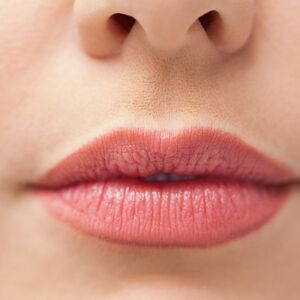

ⲥⲡⲟⲧⲟⲩ S, ⲥⲡⲁ. AF, ⲥⲫⲟⲧⲟⲩ B, ⲥⲡⲁⲧ DM (9 16) nn m, lips (dual), edge, shore a as pl: Ge 11 9 B (S ϭⲓⲛϣⲁϫⲉ), Job 15 6 SB, Ps 16 4 SBF, Si 22 30 SA, Is 30 27 SBF, Mk 7 6 SA(Cl)B χεῖλος; Jos 3 15 B (S ⲥⲧⲱ) κρηπίς; 2 Kg 19 24 S μύσταξ; C 86 281 B ⲛⲉⲛⲥ. ⲙⲡⲓⲗⲁⲕⲕⲟⲥ στόμα = BSG 180 S ⲧⲁⲡⲣⲟ MG 25 346 B sim = ROC 17 372 ܦܘܡܐ, BHom 72 S ⲡϩⲙϩⲙ ⲛⲛⲉⲩⲥ. b as sg: Ge 11 1 B ⲟⲩⲥ., Deu 3 12 S ⲡⲉⲥ. (B pl), Job 40 21 SB ⲡⲉϥⲥ. χ.; RNC 82 S ⲡⲉϥⲥ. ⲥⲛⲁⲩ (but ib ⲛⲁⲥ.), Mor 37 93 S ⲡⲉⲥ. of river ὄχθαι; BIF 13 106 S ⲡⲉⲥ. ⲛⲣⲏⲥ of sea = MG 25 290 B.
(noun male)
anatomy, earth
lips (dual), edge, shore [χειλος, κρηπις, μυσταχ]

1: lips, 2: edge, 3: shore
complete
353a
374a
374a
ⲥⲫⲟⲧⲟⲩ B v ⲥⲡⲟⲧⲟⲩ.
See also:
| view | ⲕⲣⲟ SAL ⲭⲣⲟ B ⲕⲣⲁ F ⲕⲗⲁ S plural: ⲕⲣⲱⲟⲩ SA | (noun male) shore, further side, limit
― of sea, river [περαν, περος, αιγιαλος, παραλια] ― of territory ― valley, hill S472 |
| view | ⲙⲏⲣ SB | (noun male) shore of river, esp opposite shore
― with ⲉ- as prep, to the other side ― with ϩⲓ-, on, at other side ― as nn, on further side1088 |